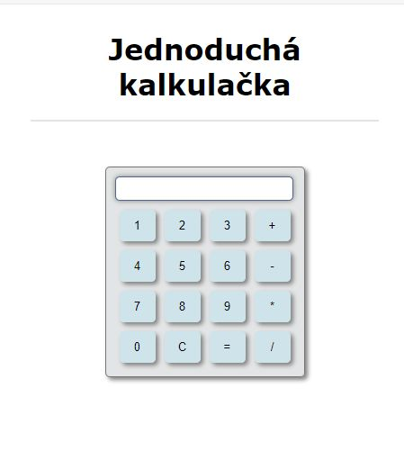
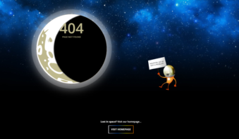
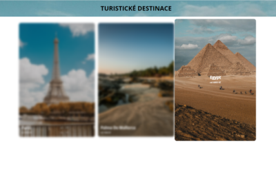
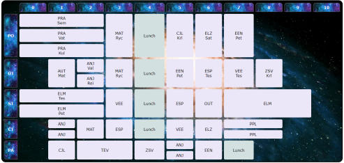

Reference
Níže naleznete ukázky mých dosavadních prací.

Jednoduchá kalkulačka vytvořená pomocí HTML, CSS a jednoduchých JS funkcí

Školní práce, předpřipravený dokument s obrázky, nutné nastylovat pozicování v CSS a animace, aby
se rozpohyboval(lítající kosmonaut, probíhající zatmívací fáze měsíce, blikající měsíc, blikací
duhové tlačítko).

Školní práce, předpřipravené dokument s obrázky, nutné nastylovat responzivitu, různé animace (při najetí myši na obrázek přejetí textu na střed obrázku, jeho zvětšení, rozmlžení ostatních ...).

Školní práce, vytvořit pomocí tabulky v HTML rozvrh hodin a nastylovat v CSS.